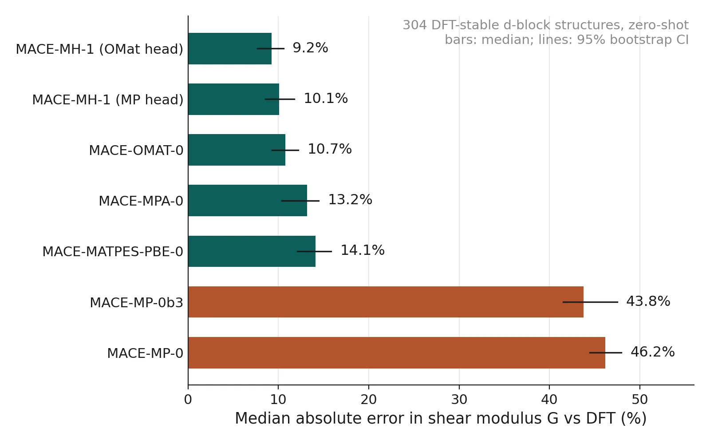
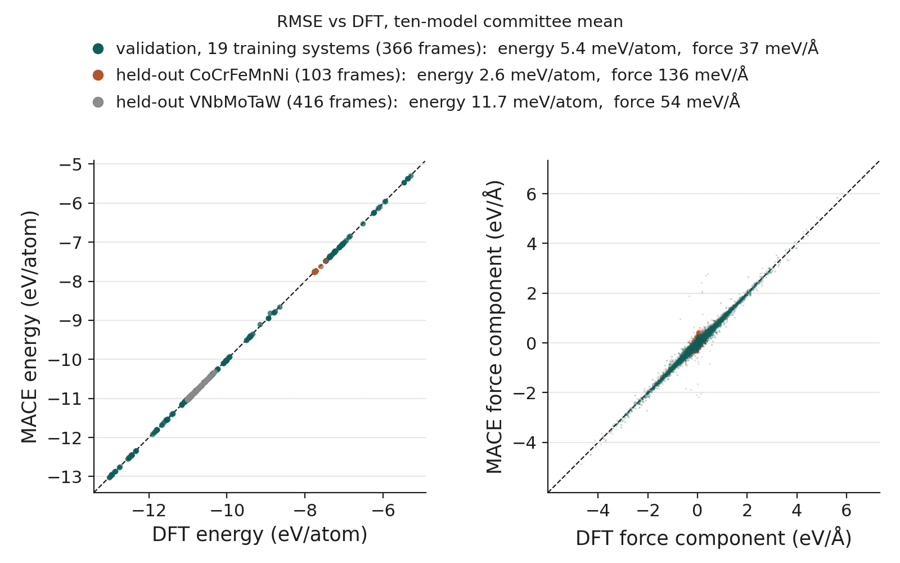
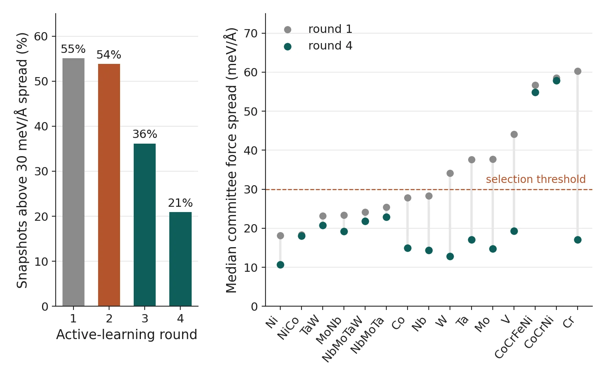

Machine-learned potentials · ongoing
Fine-tuning a multi-head MACE foundation model for high-entropy alloys
Foundation potentials promise “any element, any structure”. For the shear modulus of d-block high-entropy alloys, which matters for strength, how good are they really, and how few DFT calculations does it take to fix them?
- Benchmark. Seven foundation models, zero-shot, on 304 structures across 19 training systems, with CoCrFeMnNi and VNbMoTaW held out.
- DFT anchors. 1,870 VASP calculations (about 1.95M core-hours on PARAM Rudra).
- Committee active learning. 10 fine-tuned members on 10 A100 GPUs (~1,250 GPU-h); their disagreement picks the next DFT runs. The share of uncertain snapshots fell from 54% to 36%, then to 21% in round 4.
- Physics. Unstable stacking-fault energies 0.67–0.71 J/m² (V, Nb, Ta) and 1.47–1.80 J/m² (Mo, W); Rice ratio 6.7–8.1 for fcc and 1.8–3.6 for bcc. CoCrFeMnNi at 300 K: bulk modulus 143.6 GPa vs 143 GPa measured.
Still open. C44 comes out too low for V, Nb, Ta and W, and V is predicted unstable.
CoCrFeMnNi’s shear modulus is 12% low (70 vs 80–81 GPa), and round 4 made that worse (−28%). Round 5 is next.
Undergraduate project (UGP), IIT Kanpur, which I designed and supervise day to day · manuscript draft.
Zero-shot shear modulus · median abs. % error (lower is better)
Fine-tuning · validation error
40.8→2.4
meV/atom energy
84.9→38.5
meV/Å force
21.7→2.6
meV/atom CoCrFeMnNi offset (round 4)



